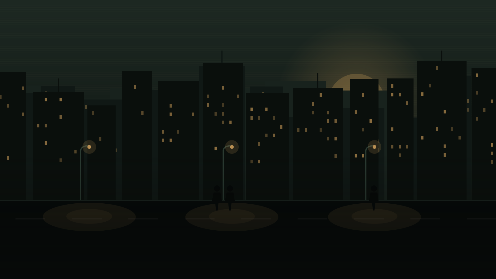
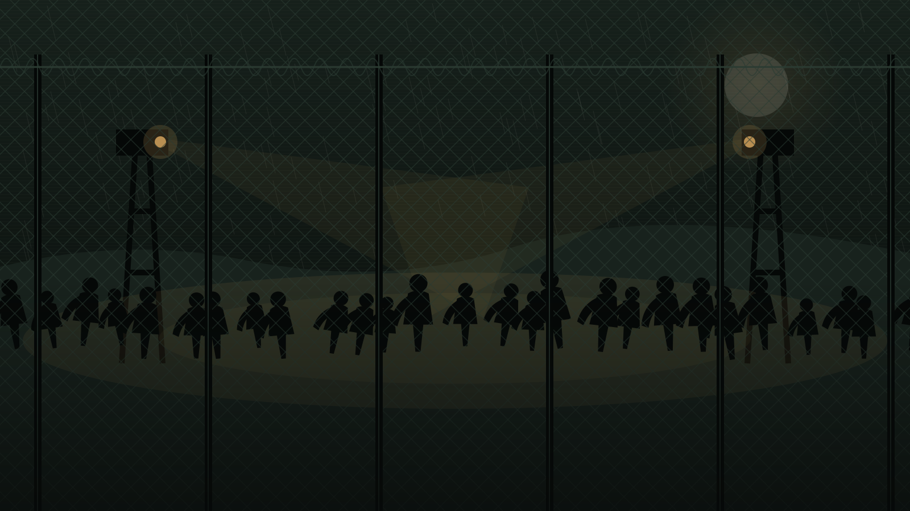
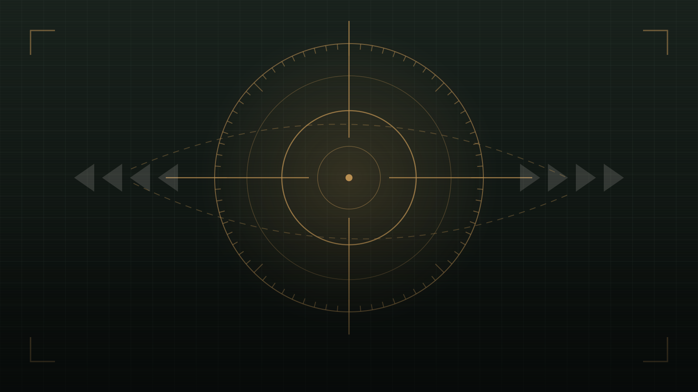
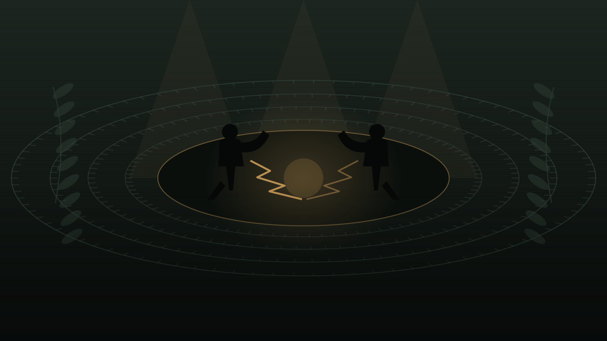

Una sola lengua, muchos acentos
Argentina, España, México, Chile, Colombia, Perú. Elysium nació para que no haya que elegir servidor por zona horaria ni por país, y hoy esa mezcla es lo que le da su tono.
Sin fronteras
Una ciudad hispanohablante en FiveM donde cada decisión queda escrita. Cuatro mundos, una sola comunidad, y una normativa que se respeta.
Deslizá para entrar
Elegís a dónde vas al entrar con tu personaje. Cada mundo tiene sus reglas, su economía y su gente: lo que pasa en uno no arrastra a los demás.




Mundo ILa ciudad de siempre. Vida civil, facciones legales e ilegales, trabajo, economía y consecuencias que quedan en el historial de tu personaje. Es el corazón del servidor y donde se aplica la normativa completa.
Elysium no se sostiene por la cantidad de scripts que tiene, sino por cómo está construida y por quiénes la habitan.
Argentina, España, México, Chile, Colombia, Perú. Elysium nació para que no haya que elegir servidor por zona horaria ni por país, y hoy esa mezcla es lo que le da su tono.
Acá tu personaje no se reinicia. Lo que hace deja huella: deudas, enemistades, antecedentes y reputación. Buscamos interpretación seria, no un mapa con armas.
Base QBox, inventario y objetivos de ox, y una base de datos revisada recurso por recurso. Menos carga, menos bugs heredados y más FPS para vos.
Las reglas están publicadas enteras en esta misma página, con artículos numerados. Nada de criterios que aparecen recién cuando te sancionan.
Tres pasos. Si ya jugás FiveM, andá directo al tercero.
Necesitás una copia original de Grand Theft Auto V para PC. Las versiones pirateadas no conectan con FiveM.
Es el cliente que te deja entrar a servidores propios. Descargalo, instalalo y vinculalo con tu cuenta de Rockstar.
Abrí FiveM, apretá F8 para abrir la consola y pegá el comando. Si preferís pasar por la whitelist primero, entrá al Discord.
connect kr546a
Calles, uniformes y zonas peligrosas. Un vistazo a lo que te espera del otro lado de la consola.


Desconocer la normativa no exime de cumplirla. Está completa acá, sin letra chica: leela antes de crear tu personaje.
Es todo lo que concierne a la vida, acciones y palabras de tu personaje dentro del entorno virtual. La interpretación debe ser constante y coherente con su historia.
Es la comunicación o acción de la persona real detrás de la pantalla. El uso de canales OOC (chat local /b o Discord) debe ser excepcional y técnico.
Se define como Actitud Anti-Rol a toda acción, comentario o comportamiento que ignore deliberadamente las bases de la interpretación, busque arruinar la experiencia de otros usuarios o demuestre un desinterés total por la narrativa del servidor.
Se define como la adquisición de información fuera del juego (Discord, directos, mensajes privados) para ser utilizada en beneficio del personaje dentro de la ciudad.
Ejemplo: ir a la ubicación de una banda porque lo viste en un stream.
Realizar acciones que superan las capacidades físicas humanas o las leyes de la física. También incluye forzar un rol sobre otro jugador sin darle opción a defenderse o reaccionar por /do.
Ejemplo: conducir un vehículo deportivo por una montaña o levantar un coche con las manos.
El acto de saltar repetidamente mientras se corre para ganar velocidad o evitar ser alcanzado. Queda estrictamente prohibido por romper la inmersión visual.
Desconectarse del servidor o forzar un crash durante una situación de rol activa (persecución, tiroteo, arresto) para evitar las consecuencias.
Agredir o causar la muerte a otro ciudadano sin que exista una interacción de rol previa, válida y justificada. El gatillo fácil será motivo de expulsión inmediata.
Utilizar cualquier tipo de vehículo motorizado como arma de choque para atropellar o embestir a otros jugadores o sus propiedades con el fin de incapacitarlos.
Buscar venganza inmediata contra la persona que te abatió. Tras un PK (Player Kill), el personaje pierde la memoria del evento y no puede participar en ese conflicto hasta que finalice.
Es la obligación de priorizar la integridad física del personaje sobre cualquier bien material o ego. Si tenés un arma apuntándote a la cabeza, tu única opción lógica es la rendición.
Estado de incapacidad temporal. Al despertar en el hospital, el ciudadano olvida los hechos directos que lo llevaron allí. No se puede retomar el rol en curso.
Olvido absoluto de todo lo relacionado con un grupo, facción o trama específica. Se aplica generalmente tras una expulsión forzosa de una organización ilegal.
Muerte definitiva del personaje. Conlleva la eliminación de propiedades, dinero y jerarquía. Requiere aprobación administrativa mediante ticket y un historial de rol que lo justifique.
Comando obligatorio para describir acciones físicas invisibles para el motor del juego.
Formato: /me le entrega los papeles del vehículo con la mano temblorosa.
Comando informativo para describir el entorno, sentimientos o preguntar por el estado de una situación. Mentir por /do se considera falta gravísima.
Formato: /do ¿sería posible verle el arma en la cintura al registrarlo?
Áreas donde el rol agresivo es nulo:
Queda prohibido huir hacia estos perímetros durante una persecución o conflicto para evitar ser robado o abatido.
Queda estrictamente prohibido el uso de nombres que no cumplan con un estándar de realismo.
Tu personaje debe tener una apariencia humana coherente.
El outfit debe ser acorde a la situación y al entorno de la ciudad.
La voz es la herramienta principal de interpretación. El tono y el volumen deben ser coherentes con la situación.
Representan las herramientas tecnológicas que tu personaje lleva en el inventario.
Este sistema representa la prensa y los medios de difusión masivos de la ciudad.
Aunque es un canal OOC, se usa dentro del juego para coordinar situaciones rápidas.
No se puede secuestrar a cualquier persona en cualquier momento.
Ciertos roles tienen una protección especial para asegurar la operatividad de la ciudad.
El secuestrador es responsable de la calidad del rol de la víctima.
Para mantener el equilibrio de la economía de Elysium se establecen los siguientes topes.
| Tipo de víctima | Rescate máximo | Retención máxima |
|---|---|---|
| Civil común | $50.000 | 20 minutos |
| Miembro de banda | $150.000 | 40 minutos |
| Oficial de policía | $300.000 | 45 minutos |
| Alto mando | $500.000 y acuerdos | 60 minutos, con permiso |
No hace falta currículum ni esperar una temporada. Conectá, elegí tu mundo y empezá a escribir tu historia.